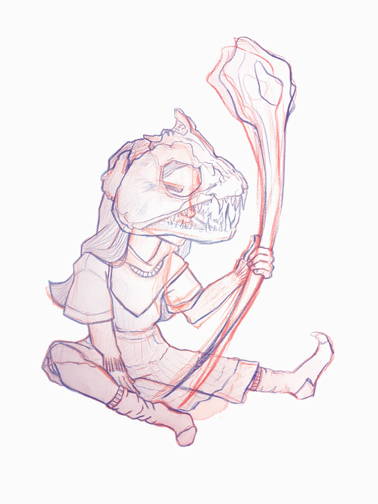

Skullyboys
Illustration, 2018/19

A series of hand-drawn and digitally coloured illustrations inspired by those in my life.
This series looks at the connections between humans and animals and the balances between softness and fierceness.
This series looks at the connections between humans and animals and the balances between softness and fierceness.
